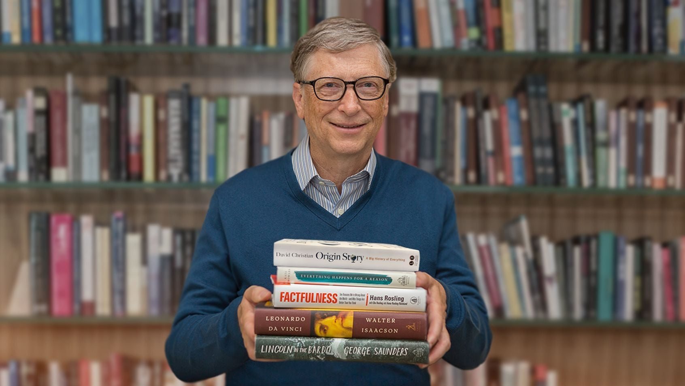

Bill Gates főbb munkásságai

Technológia
Gates a Microsofttal örökre megváltoztatta a technológia világát. A Windows operációs rendszer lehetővé tette, hogy szinte mindenki használhasson számítógépet, nem csak a szakértők. Az ő víziója nélkül a modern digitális világ egészen másképp nézne ki.

Filantrópia
A Bill & Melinda Gates Alapítványt 2000-ben hozta létre, és azóta több mint 50 milliárd dollárt fordított jótékony célokra. Fő céljai közé tartozik a szegénység csökkentése, a betegségek leküzdése és az oktatás fejlesztése a világ legszegényebb országaiban. Gates ma sokan tartják a történelem legbefolyásosabb jótevőjének.

Szerzőség
Bill Gates nemcsak üzletember, hanem elkötelezett gondolkodó és szerző is. Könyveiben és blogján rendszeresen ír technológiáról, egészségügyről és a világ jövőjéről. Legismertebb műve a „Hogyan kerüljük el a következő járványt?", amelyben részletesen elemzi, hogyan készülhetünk fel a jövő kihívásaira.